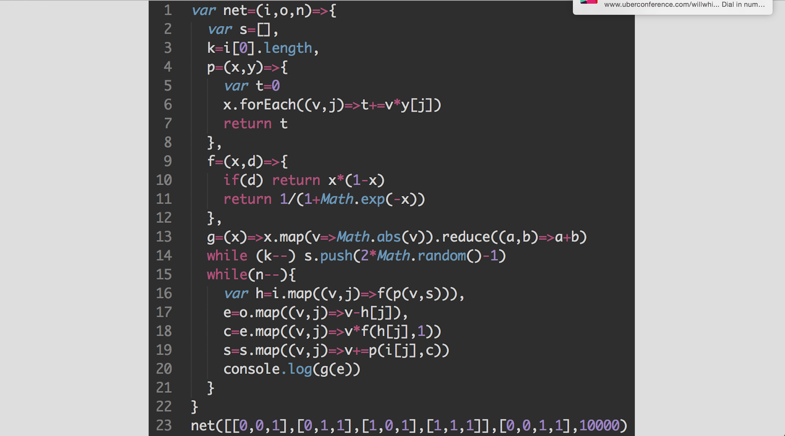
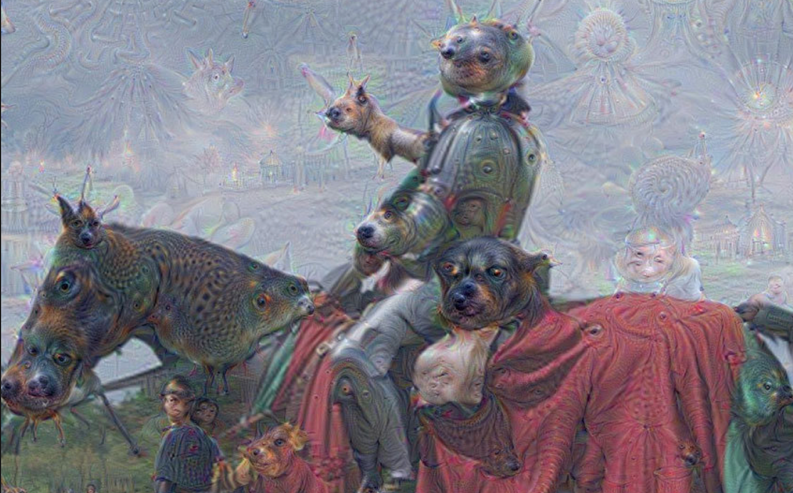
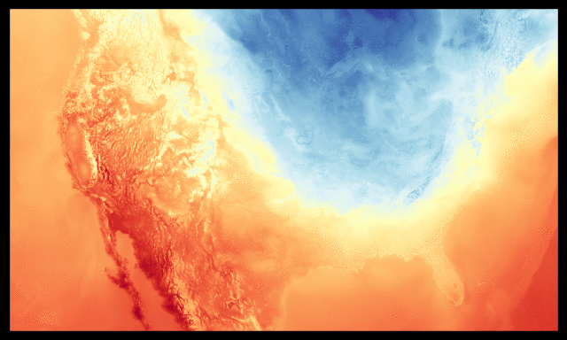
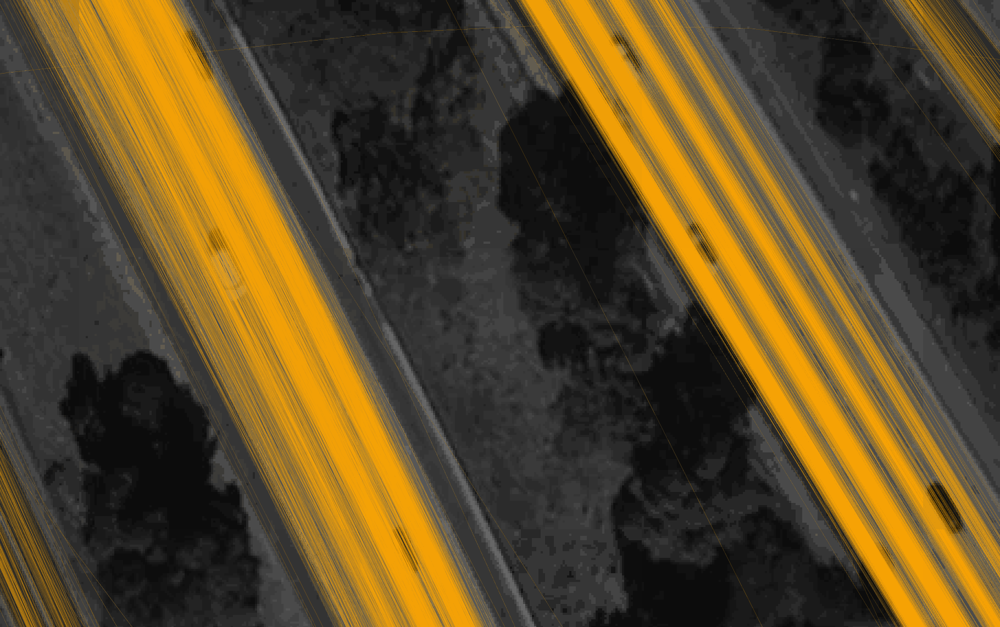
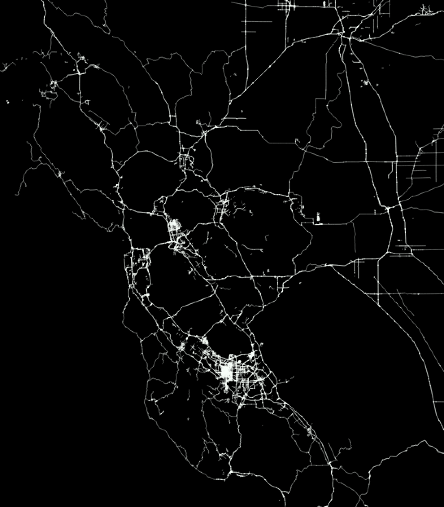
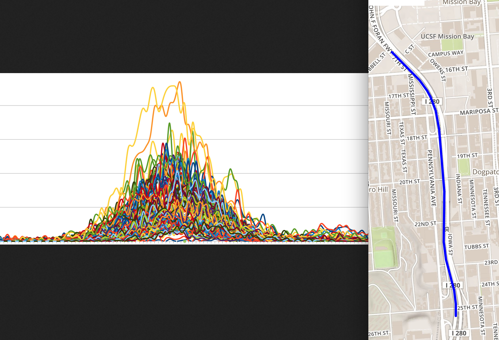
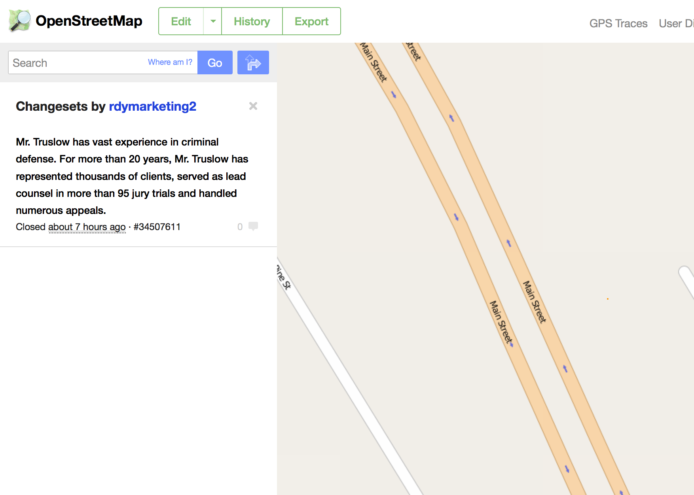

@morganherlocker
Geospatial Machine Learning
machine learning is when programs get better at guessing things with more data
testable predictions are a requirement
does this person have heart disease?
- sex: male
- age: 49
- blood pressure: 120/139
- number of dogs: 2
- family history: yes
- eye color: brown
models start with random parameters
they train by testing themselves against known data
they tweak a parameter when they are wrong
humans do this too
humans usually give up after a few tries
humans can pattern match very quickly
machine learning is a set of tools
different algorithms have different
- purposes
- strengths
- weaknesses
the algorithms are fairly simple
machine learning is about statistics, not magic

complexity exists in the models

What does this have to do with geo?
- mapping automation - lane detection, missing road detection, building tracing
- vandalism prevention - finding spam, bad edits, etc in OpenStreetMap
- fuzzy routing - multivariate ETA estimation
- urban planning - demographic projections
- data augmentation - fill in gaps of existing datasets with variable confidence

low hanging fruit
spatial is (not) special
(that's a good thing)
most geo problems are one of the following
- 1 dimensional arrays - ANN - tabular data like demographics, economic numbers
- 2d arrays - CNN - rasters, satellite imagery, drone imagery, videos
- sequential graphs - RNN - route planning, temporal vector data
- language - BOW/skip-grams/tokenizing/W2V - geocoders, generalized natural search engines, spatial sentiment analysis, OSM commits
real world
lane detection
OSM

OSM changeset flagging
- What the hell was this?
- Corrections of a lot of errors of a bad data import :-/
- Sort out some f***ing chaos

js tools
- brain
- node-fann
- convnetjs
- natural
- sentiment
- word2vec (cli)
- caffe (cli)
@morganherlocker
morgan@mapbox.com
credits
- robot learning to walk - john goatstream
- robot failing to open door - darpa
- scary robot - boston dynamics
- strawberry robot - nhk world
- chimp memory puzzle - bbc